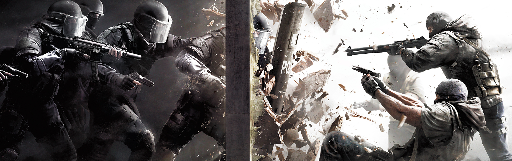
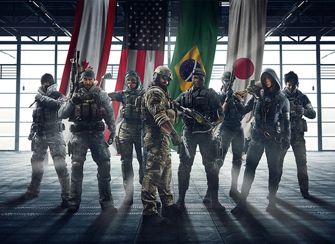
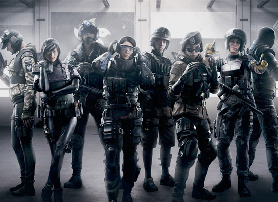
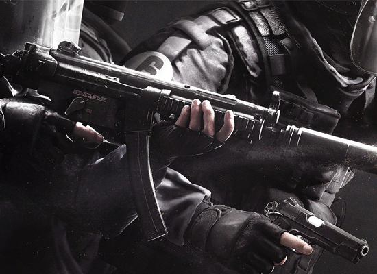

O Rainbow Six foi um jogo lançado em 2015 e em seu primeiro ano lançou 4 atualizações onde revolucionou o estilo do jogo, todo bimestre era lançado uma operação onde ocorreram 4 chamadas: Operation Black Ice, Operation Dust Line, Operation Skull Rain e Red Crow onde foi lançados mapas, armas, operadores e entre outras coisas.
Em seu segundo ano lançou novamente 4 atualizações que mudavam o estilo do jogo, todo bimestre era lançado uma operação onde ocorreram 4 chamadas: Operation Velvet Shell, Operation Health, Operation Blood Orchid e Operation White Noise onde foi lançados mapas, armas, operadores e entre outras coisas.
Tom Clancy's Rainbow Six Siege é um videojogo do género first person shooter produzido pela Ubisoft Montreal. Foi anunciado pela Ubisoft a 9 de Junho de 2014 na Electronic Entertainment Expo 2014 onde foi muito aplaudido pela crítica. Foi lançado para Xbox One, PlayStation 4 e para Microsoft Windows em 1 de Dezembro de 2015.
Siege usa o motor AnvilNext, propriedade da Ubisoft, e é considerado o sucessor de Tom Clancy's Rainbow 6: Patriots, que foi cancelado. Como os outros títulos da série, foca-se sobretudo no trabalho em equipe e realismo. No entanto, têm algumas diferenças para os outros jogos, baseando-se fortemente na cooperação entre os jogadores e na destruição de ambientes fechados. No entanto, Siege não tem nenhuma apenas os cenários campanha, apesar de oferecer o modo Cenários, onde o jogador pode aprender a utilizar os operadores, e oferece também o modo online.
Os jogadores assumem o papel de um dos membros da equipe contra-terrorista Rainbow, que tem de enfrentar um novo inimigo chamado The White Masks, que estão a causar o caos por todo o mundo apesar de se desconhecer as suas reais intenções.